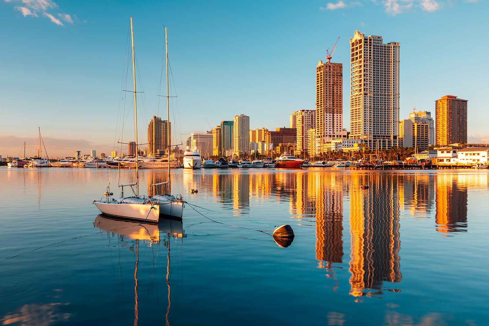
Manila Baywalk
Manila Baywalk is a popular leisure center and favorite sunset location for city dwellers. The 2-km stretch of coastline runs alongside Roxas Boulevard, past Manila Yacht Club, and is bordered by the US Embassy and Cultural Center of the Philippines.
See More
Rizal Park
This premier people’s park boasts world-class sculptures, historical markers, beautiful gardens, facilities for photo and art exhibits, event venues, and various forms of entertainment. More than just a place to stroll around, Rizal Park is indeed a sanctuary for people from all walks of life.
See More
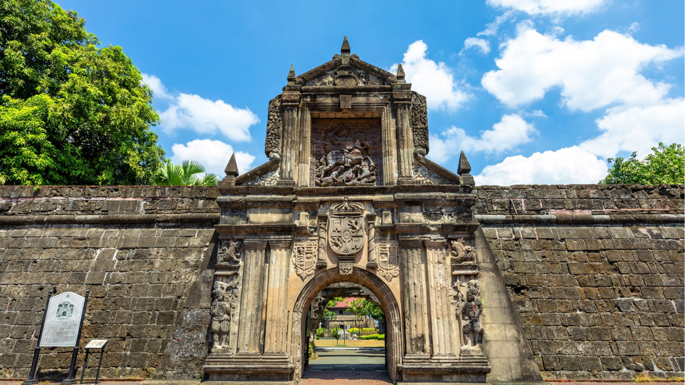
Fort Santiago
Fort Santiago is the oldest Spanish bastion in the Philippines. Situated inside the walled city of Intramuros in Manila, the site witnessed many historical events in the Philippines.
See More
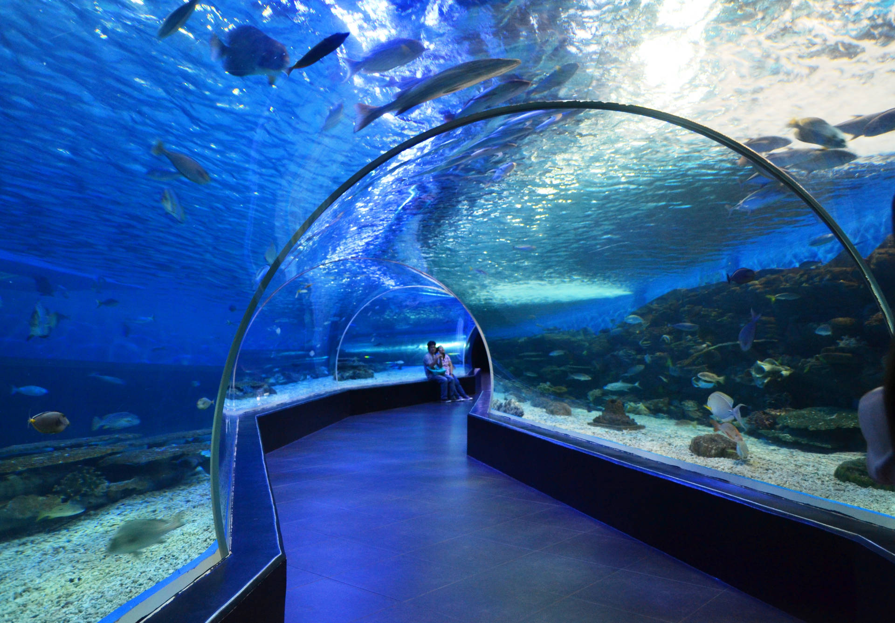
Manila Ocean Park
If you've always wanted to learn more about marine life or want to experience a day of
wonder and excitement at Manila Ocean Park, you're in the right hands. We've got a
rundown of the park’s most exciting attractions to help you choose which ones would
pique your interest the most
See More
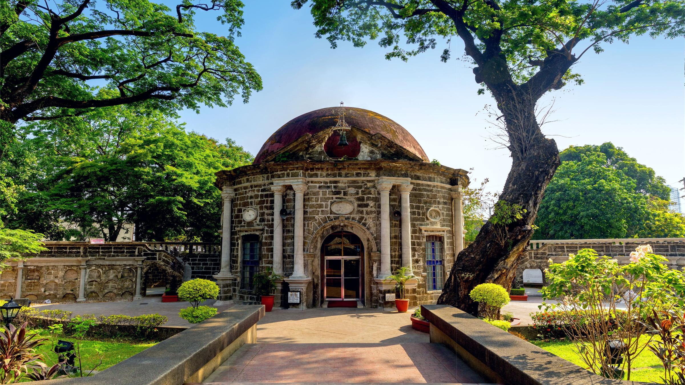
Paco Park
This is a peaceful site, best known for housing a circular domed church called St. Pancratius Chapel. It also features
old-fashioned gardens and a fountain. The bodies of the victims of the cholera epidemic
of the year were assigned to the niches in the wall of Paco Cemetery, built in the year
1820.
See More
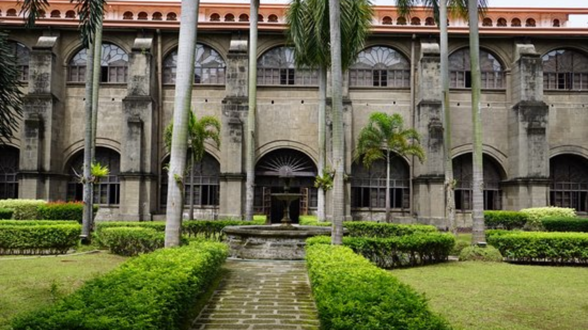
Museo San Agustin
San Agustin Museum opened its doors in 1973 providing access to the attached 16th-century San Agustin Church, a Unesco Heritage site. Features the church's huge collection of religious artifacts, architecture, carvings, furniture, and choir books, the oldest in the Philippines.
See More
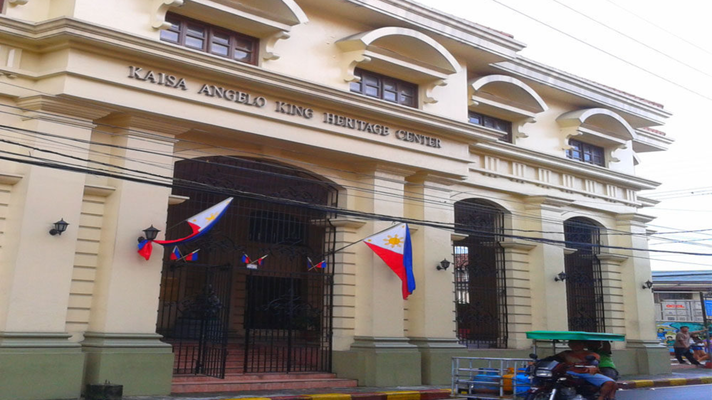
Bahay Tsinoy
The Bahay Tsinoy is a structure located in the walled city of Intramuros. The households are in a museum called the Kaisa-Angeli King Heritage Center. It shows a collection of different documents and accounts that tell the history of the ethnic Chinese lives, struggles, and contributions to the country.
See More
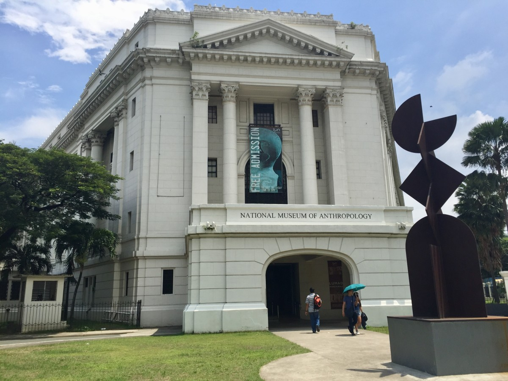
National Museum of Anthropology
The National Museum of Anthropology stages the Philippine ethnographic and terrestrial underwater archeological collection narrating the story of the Philippines from the past, to the present through artifacts as evidence of its pre-history
See More
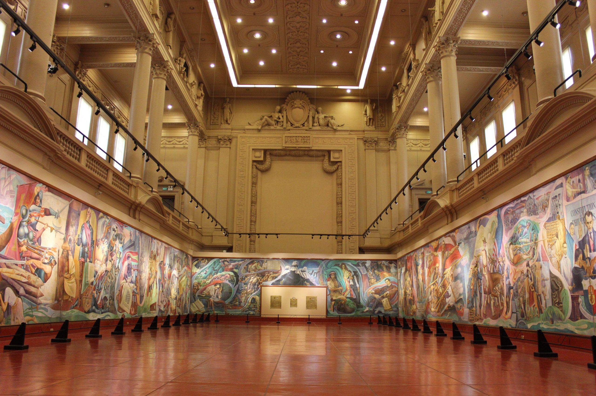
National Museum of Fine Arts
It is the house of priceless works by Filipino masters such as Juan
Luna, Guillermo Tolentino and Félix Resurrección Hidalgo. The building itself, with its neoclassical
architecture, is a work of art built in the early 1920s. Originally built to be a legislative
hall, it now displays works by Filipino masters, both ancient and modern.
See More
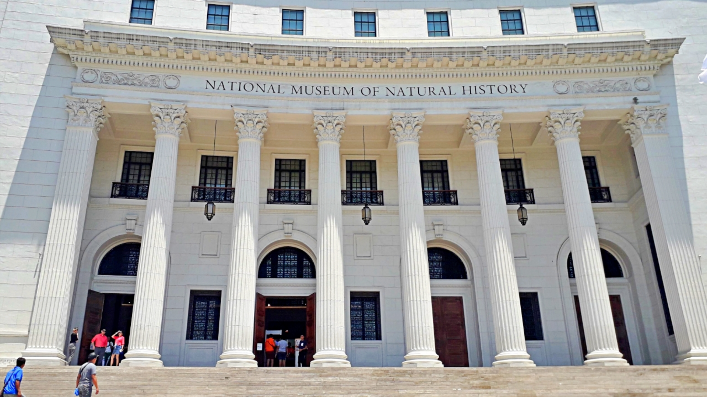
National Museum of Natural History
Exhibits the rich biological and geological diversity of the Philippines, including creatively curated
displays of botanical, zoological, and geological specimens that represent our unique
natural history. Situated at the center of the museum is a “Tree of Life” structure that
proudly connects all the unique ecosystems in the Philippines.
See More
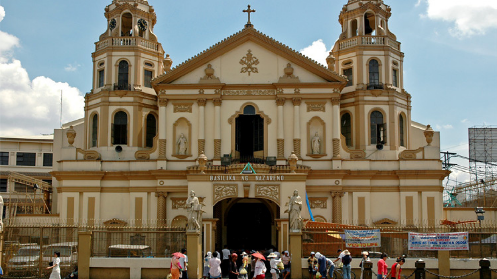
Quiapo Church
The Minor Basilica of the Black Nazarene, widely known as the Quiapo Church is one of the most famous basilicas in the metro. Prominent with its baroque style. Seen with its unique construction, the church is also distinctive with the different religious statues that are present in it.
See More
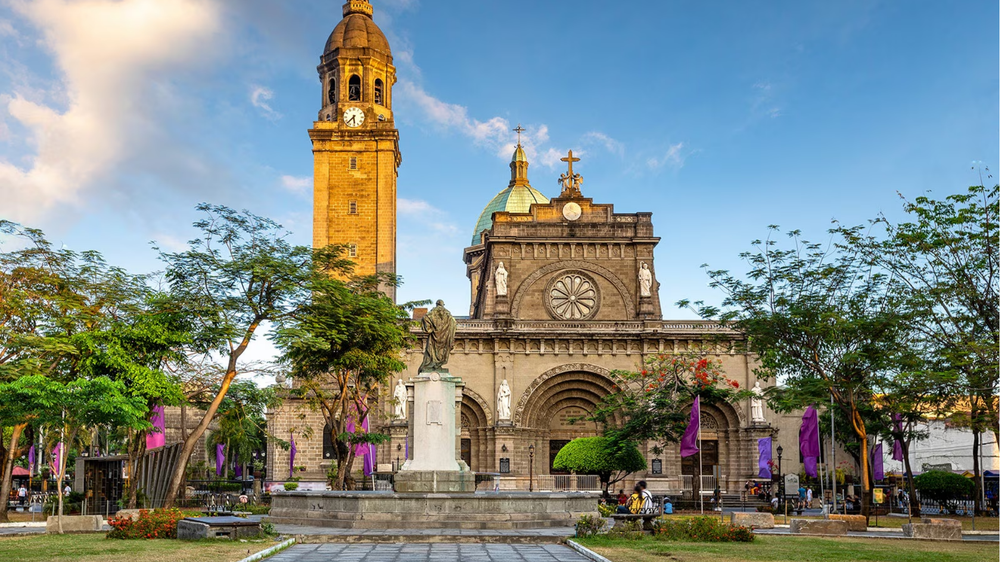
Manila Cathedral
Recognized as the principal Roman Catholic church in the Philippines is Manila Cathedral. The Manila Metropolitan Cathedral-Basilica, officially known as the seat of the Archbishop of the Archdiocese of Manila, is situated in the Plaza de Roma neighborhood of Intramuros.
See More
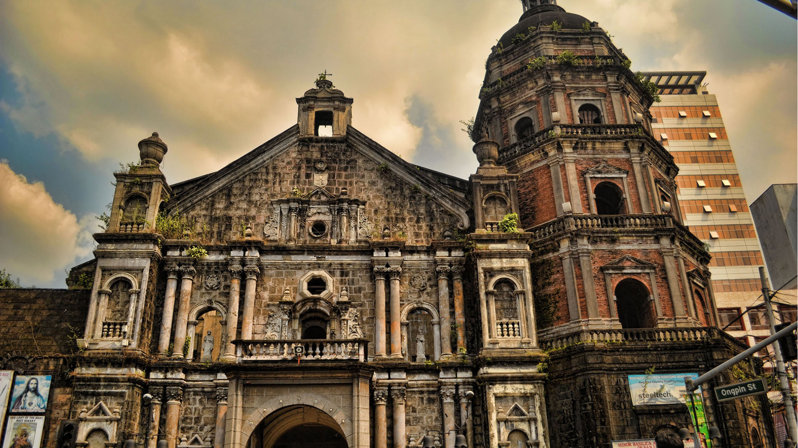
Binondo Church
Considered one of the most beautiful churches in the country, Binondo Church is one of the oldest Roman Catholic churches in Metro Manila, having been built and rebuilt each time it was destroyed. Known as the Minor Basilica of St. Lorenzo Ruiz, as well as Our Lady of the Most Holy Rosary Parish.
See More
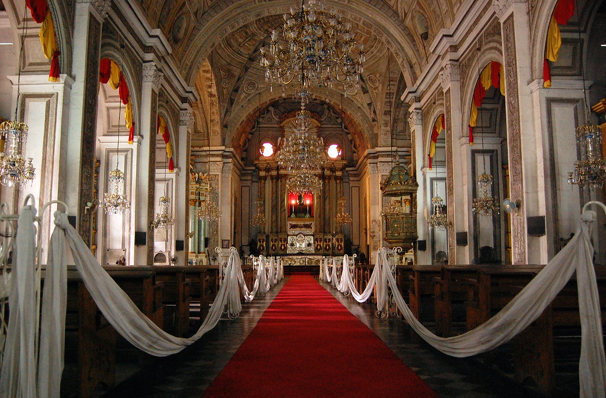
San Agustin Church
This is the oldest church in the Philippines. The church, together with the
monastery nearby, was the only structure left standing after World War II. The current
structure is the third version of the church which survived several natural disasters
through time
See More
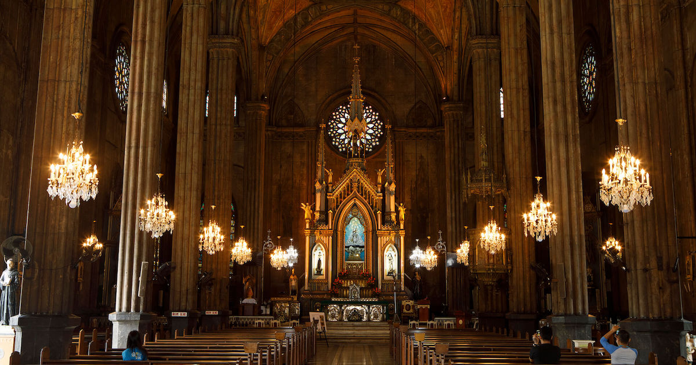
San Sebastian Church
A.k.a "Minor Basilica" of San Sebastian, is best known for being the only church made entirely
out of steel in Asia. The decision was stemmed from a priest’s request in the 1880s for a structure that could withstand earthquakes. The steel
sections were manufactured in Belgium, but the structure was assembled in Quiapo.
See More


{kind=link}